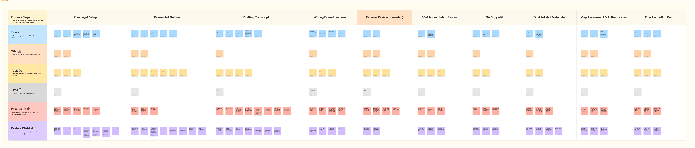
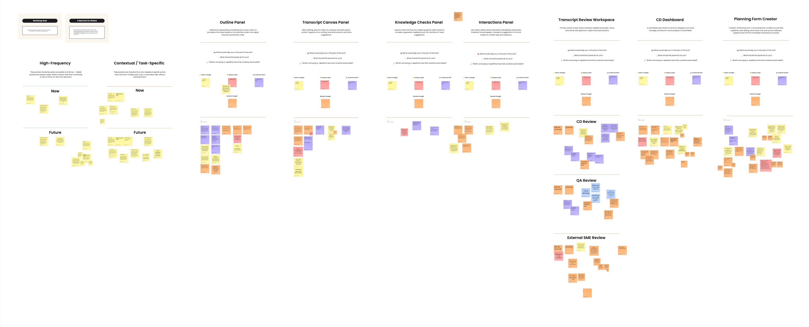
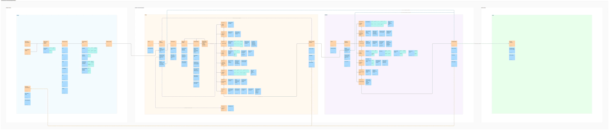
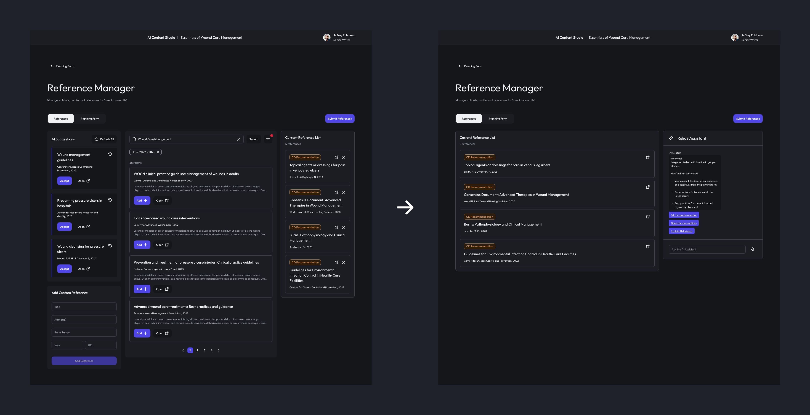
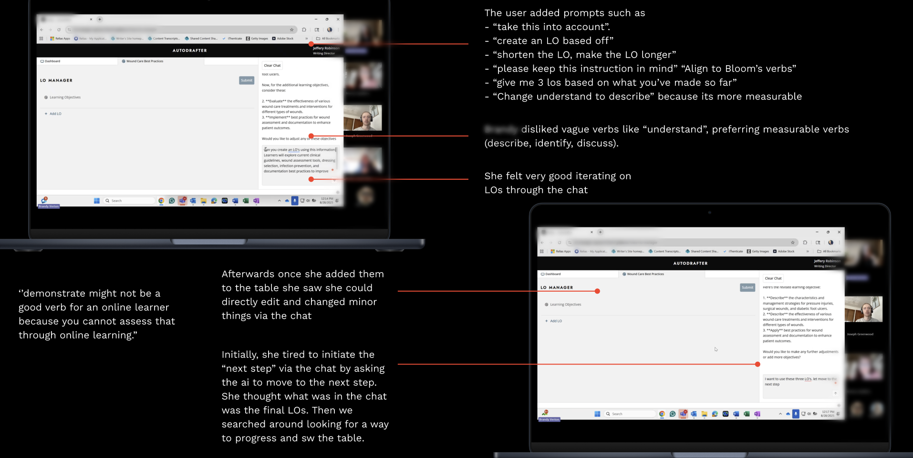
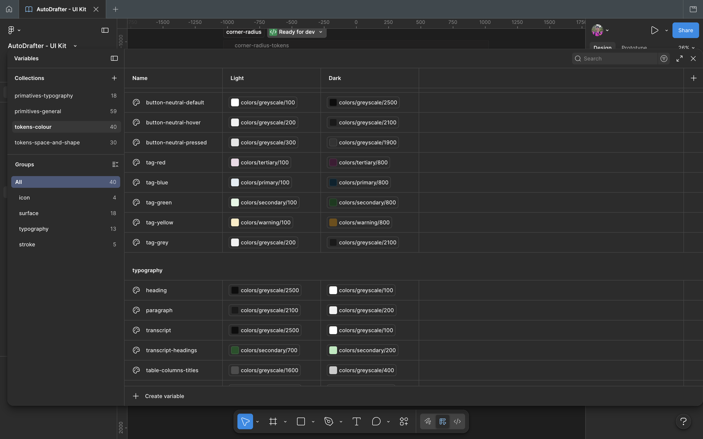
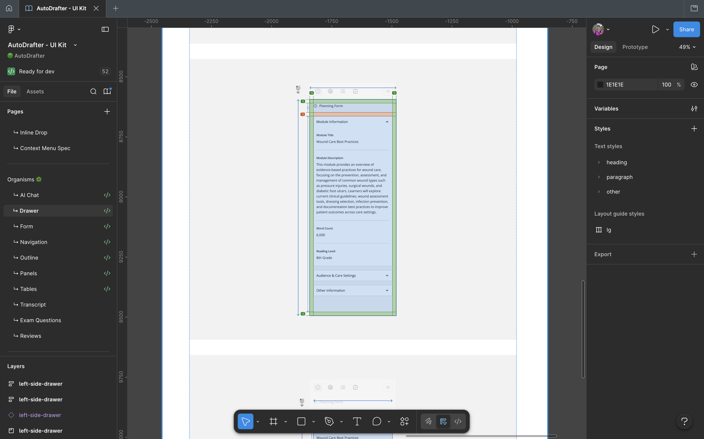

ReliasEnterprise UX2025 - 2026
Designing an AI-First Content Creation Platform for Healthcare Education
Problem
Adapting to a Rapidly Changing Landscape
As generative AI was impacting the world, Relias felt they faced a critical risk: evolve or be outpaced by faster, AI-driven competitors.
While writers were already using tools like ChatGPT, usage was fragmented. This gap between AI capability and existing processes led Relias to pursue a more integrated approach, aiming to reduce transcript production time by 35% while maintaining accuracy, compliance, and quality.
Solution
A Unified Content System
To help Relias move from fragmented ChatGPT usage to a unified, AI-integrated workflow, we designed a centralised Content Studio platform.
AI was embedded across writing, review, and build processes, focusing on transcript generation and supporting the business goal of a 35% reduction in production time.
At the same time, the solution extended beyond AI. Addressing underlying inefficiencies by unifying fragmented workflows into a single system, reducing duplication, improving visibility, and streamlining collaboration across teams.
Impact
01. Reduced production time through AI-first workflows
By shifting from manual drafting to AI-assisted generation, the platform significantly reduced the time required to create transcripts, supporting faster content production without sacrificing quality.
02. Accelerated time to market for educational content
Streamlining creation and review workflows enabled teams to produce and publish content more quickly, improving responsiveness to business needs.
03. Streamlined end-to-end content workflows
Unifying previously disconnected tools into a single system eliminated redundant steps, reduced context switching, and improved visibility across writing, review, and QA processes.
04. Improved content quality and consistency
Embedding structure, standards, and guidance directly into the system reduced reliance on manual formatting and review cycles, leading to more consistent outputs and fewer preventable errors.
05. Increased confidence and traceability in AI-generated content
Making generation, edits, and sources transparent improved trust in outputs, addressing key concerns around compliance, validation, and accountability.
06. Enabled faster product and feature development
A scalable design system and unified platform foundation allowed teams to build and iterate more efficiently, supporting ongoing product growth.
01 Understanding Current State
Uncovering a System in Transition
We conducted a four-week discovery phase, beginning with on-site workshops and stakeholder interviews. Through these sessions with writers, reviewers, and leadership, we mapped the end-to-end content creation process.
Initially, before our investigation, there was no clear “broken” workflow. Existing processes were functional. Our focus was to understand how users currently create and review content, identify where AI was already being used informally, uncover inefficiencies, risks, and opportunities for integration.
We weren’t solving a visible problem, we were uncovering how to evolve a working system.

Current State Journey Map
Key Insights
01. HIGHLY MANUAL AND REPETITIVE WORK
Teams spend a large amount of time copying, pasting, reformatting, and re-entering information across tools instead of creating content. This slows production and introduces avoidable errors.
02. DISCONNECTED TOOLS AND FRAGMENTED WORKFLOW
The process is split across multiple systems that don’t integrate well, causing poor handoffs, lost context, and inefficiencies throughout the lifecycle.
03. INEFFICIENT REVIEW, QA, AND VERSIONING
Feedback is scattered, changes are hard to track, and multiple review layers create bottlenecks. QA repeatedly catches preventable issues, and version control is messy.
04. INCONSISTENT CONTENT QUALITY, ALIGNMENT, AND BRAND VOICE
There’s no system enforcing alignment between learning objectives, content, and assessments. Quality, tone, and brand voice vary across courses, and standards are checked manually instead of systematically.
05. LIMITED TRACEABILITY AND TRUST IN CONTENT (ESPECIALLY AI)
It’s difficult to see what was generated vs. edited, why changes were made, and whether sources are valid. This creates risk for compliance and reduces confidence in outputs.
03 Explore future state
Shifting Mindsets
It was critical to involve users directly in shaping the future of the system. Through collaborative workshops with writers, reviewers, and stakeholders, we explored how content workflows could evolve beyond their current state. Conversations naturally defaulted to improving existing processes rather than rethinking them. To move forward, we reframed discussions around the future: how roles would change, how work would be supported, and what an ideal workflow could look like in a more integrated system.
This shift surfaced several key ideas and requests. One consistent need was better support for maintaining visual and content standards. Writers relied on Word-based templated to format titles, copy, and structure, yet these were manually applied and often inconsistent. This presented an opportunity to embed these standards directly into the system, removing the need for manual formatting and ensuring consistency by design.

Collaborative Workshop Session Board
Before moving into interface design, it was essential to align on how the system should function at a structural level. Using insights gathered from workshops and discovery, we developed and iterated on multiple future-state artifacts, including journey maps, user flows, and product diagrams. These helped us visualize how content would move through the system, how responsibilities would shift, and where automation could support each stage.
In parallel, we explored how user roles themselves would evolve, moving from content creators to editors, validators, and decision-makers within a more system-driven workflow.

Future State Product Diagram
04 Initial Prototypes & Screens
Showing Less, Enabling More
We explored a wide range of interface concepts and layouts, testing different ways to support writing, research, and review workflows.
A key breakthrough came when we realised that many of these functions, searching, generating suggestions, and manually adding some content, could be consolidated into a single interaction model. With AI acting as a central assistant, these actions no longer required separate UI components, allowing users to request what they need in context.
This shift simplified the interface, reduced the number of steps required to complete tasks. It also reduced frontend complexity, making the system easier to build and scale.

Before → After: Simplifying the Interface
05 Validate & Refine the Solution
Testing Beyond the Interface with AI Prototypes
Traditional Figma prototypes were not sufficient for testing interactions with a language model. Static screens could not capture how users would actually engage with a system driven by conversation and dynamic responses.
To address this, I built a production-like prototype by using Figma’s MCP to build the interface with lightweight AI agents integrated into the UI via OpenAI’s API. This allowed us to simulate real interactions between users and the system.
These prototypes enabled us to go beyond usability testing and observe behavior in context, how users think, how they phrase requests, what they expect from responses, and how they navigate tasks through conversation.
This approach also provided valuable insights for the development team, helping inform how AI agents should be structured, orchestrated, and integrated into the product.

Production Prototype Testing Session
One of the most interesting insights emerged during testing: users naturally defaulted to conversation over traditional interface patterns.
In several cases, users attempted to continue workflows by asking the system directly, rather than using buttons or predefined UI actions. This highlighted a shift in mental models, where users expected the system to respond dynamically to intent, not just structured inputs.
Production Prototype Demo. Rebranded for Confidentiality.
06 Final Design & Refinement
Aligning design with real system behavior
Building on validated insights, we translated learnings from co-creation and testing into the final design. A key focus was aligning design with how the system actually works. The solution relied on specialised agents coordinated by an orchestration layer, shaping how features, interactions, and responsibilities were structured.
This extended into conversational design, defining how the system responds, guides users, and supports decision-making. By grounding decisions in both user behavior and system capabilities, we created a solution that is intuitive, feasible, and scalable.
07 Design to Delivery
Designing for Scale
We developed an initial UI kit to support the first phase of the product build, enabling rapid development across a four-month delivery timeline.
As the product evolved, this foundation was expanded into a scalable design system. Using atomic design principles, we created a structured set of components that ensured consistency, improved development efficiency, and supported future growth. This approach allowed the team to move quickly in the early stages while establishing a system that could scale alongside the product.



This is an active, evolving project.
The product has just recently launched so, we will continue to develop this case study as we monitor performance, gather feedback, and iterate on what’s been implemented.